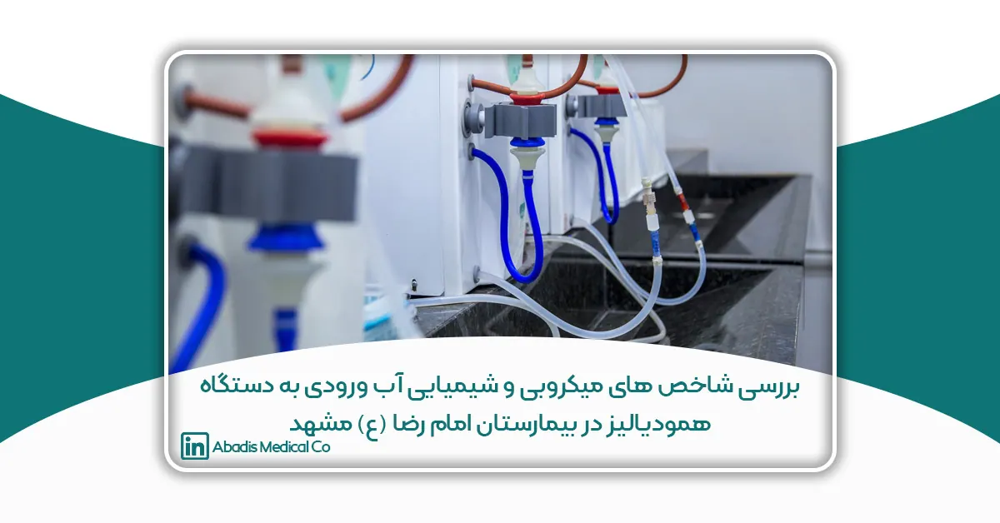
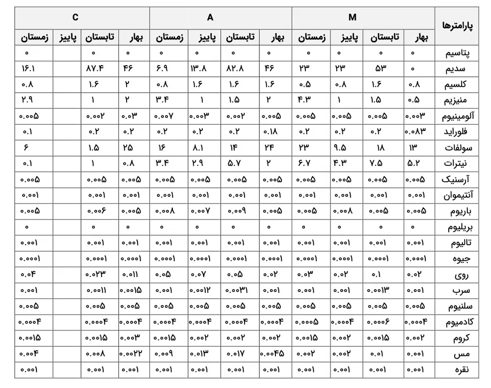

این مقاله برای یازدهمین کنگره کنترل عفونت نوشته و ارسال شده است.
چکیده
مقدمه
کیفیت آب مصرفی برای آماده سازی محلول دیالیز به دلیل ارتباط مستقیم این محلول با خون بیماران دارای نارسایی کلیوی، از اهمیت بالایی برخوردار است.
وجود هر نوع آلودگی شیمیایی و میکروبی در آب مورد استفاده در دستگاههای RO همودیالیز میتواند برای این بیماران بسیار خطرناک بوده وباعث بروز مشکلاتی از جمله: مسمومیتهای حاد، بیماریهای مغزی، استخوانی و … گردد.
لذا رعایت استانداردها برای آب دیالیز حیاتی بوده و اهمیت کنترل کیفیت آب مصرفی در این دستگاهها ضروری است. این مطالعه به بررسی کیفیت میکروبی و شیمیایی آب ورودی به دستگاههای RO همودیالیز در مجتمع بیمارستانی امام رضا (ع) شهر مشهد در سال ۱۴۰۱ می پردازد.
روش بررسی
این مطالعه به صورت توصیفی-مقطعی به منظور بررسی شاخصهای میکروبی و شیمیایی آب مصرفی در دستگاههای همودیالیز مجتمع بیمارستانی امام رضا(ع) مطابق روش های استاندارد نمونه برداری آب و فاضلاب در سال 1401 انجام گرفت. تعداد نمونههای برداشتی ۹۴ مورد که ۷۲ مورد میکروبی و ۲۲ مورد شیمیایی بود که در طول سال ۱۴۰۱ به صورت ماهیانه و فصلی از دستگاههای ROهمودیالیز در بخش دیالیز و بخشهای مراقبت ویژه که دارای تخت دیالیز می باشند برداشت شد.
یافته ها
بررسی نتایج آزمایشات میکروبی آب دستگاه RO دیالیز نشان داد از مجموع 72 نمونه آزمایش میکروبی ۸۲٪ از نمونههای میکروبی کمتر از حد استاندارد بوده و ۱۸٪ بالاتر از حد استاندارد میباشد. غلظت کاتیون و آنیون ها و ترکیبات اندازهگیری شده به جز نیترات و منیزیم کمتر از حد استاندارد گزارش گردید. از مجموع 22 نمونه آزمایش شیمیایی انجام شده در 13 % از نمونه ها غلظت کاتیون منیزیم و در 59% از نمونه ها غلظت نیترات بالاتر از حد استاندارد می باشد.
نتیجه گیری
بالا بودن مقادیر کاتیون و آنیون بالاتر از حد استاندارد در برخی از نمونههای میکروبی وشیمیایی نیاز به پایش مجدد، استانداردسازی وضعیت فضای فیزیکی دستگاهها و ضرورت اقدام اصلاحی را نشان میدهد.
واژگان کلیدی: دستگاههای همودیالیز، دستگاه RO، کیفیت میکروبی، کیفیت شیمیایی، مجتمع بیمارستانی امام رضا(ع)
مقدمه
همودیالیز روشی درمانی برای بیماران مبتلا به نارسایی مزمن کلیه است که جهت تصحیح عدم تعادل آب و الکترولیتها و مواد شیمیایی خون استفاده میشود. نارسایی کلیه به حالتی گفته می شود که در نتیجه کاهش عملکرد کلیه و کاهش ادرار، مواد زاید و سمی ناشی از متابولیسم در بدن افزایش مییابد. همودیالیز فرآیندی است که در آن از طریق غشاهای نیمه تراوا از جنس سلولز سموم تجمع یافته در خون بیمار را تصفیه نموده و همراه با آب دفع مینماید.
بیماران همودیالیز در طول هفته مقادیر زیادی آب را در فرایند دیالیز دریافت میکنند و این آب با عبور از غشای مصنوعی به طور مستقیم وارد جریان خون شده و به این دلیل حائز اهمیت است.
مایع دیالیز شامل: مخلوطی از مواد اولیه تغلیظ شده الکترولیتها و آب به نسبت ۱ به ۳۴ میباشد. مایع تغلیظ شده به طور تجاری در کیفیتهای یکسان و کاملاً کنترل شده تولید میشود، ولی آب مورد اسـتفاده ممکن اسـت دارای کیفیت متفاوتی باشد. استفاده از آب شیر معمولی همواره احتمال انتقال مواد بالقوه سمی از مایع دیالیز به خون بیمار را به همراه دارد. از این رو کیفیت آب مصرفی برای آماده سازی محلـول دیالیز از اهمیت بسیار زیادی برخوردار است.
آلایندههای متعددی در آب مورد استفاده جهت دیالیز وجود دارد که ممکن است برای بیماران زیانآور باشند. آلودگی میکروبی یا شیمیایی آب میتواند عواقب جدی یا کشندهای داشته باشد یا سبب ایجاد عفونت و تولید اندوتوکسین همراه با واکنشهای تب زای خفیف، متوسط تا کشنده در بیماران دیالیزی شود.
در سیستمهای همودیالیز، باکتریهای گرم منفی موجود در آب، آلوده کننده بوده لذا اکثر روشهای گندزدایی معطوف به این گروه از باکتریها است. ترکیب شدن آب حاوی باکتریهای گرم منفی با مایع دیالیز میتواند باعث تکثیر سریع تر این میکروبها شود.
مواد شیمیایی دارای سه زیرگروه بوده:
- آنهایی که برای بیماران همودیالیزی دارای سمیت هستند، نظیر: آلومینیوم، ترکیبات کلر، نیترات، سولفات، مس و روی که اثرات ناشی از این مواد شامل: زوال عقل، نرمی استخوان، کم خونی همولیتیک، تهوع و استفراغ می باشد. به عنوان مثال نیترات ممکن است سبب بیماری متهموگلوبینما شود که در این حالت هموگلوبین گلبولهای قرمز قادر به انتقال اکسیژن نیست، باعث همولیز خون می شود.
- آلایندههای شیمیایی مضری که دارای مقادیر ناچیزی در آب هستند که در حال حاضر با روش های پیشرفته قابل تصفیه میباشند نظیر: آرسنیک، کروم، سرب و سلنیوم.
- مواد فیزیولوژیکی که در صورت وجود مقادیر زیاد در آب منجر به آسیب جسمی میگردند مثل: کلسیم، پتاسیم و سدیم t منگنز و آهن خاصیت سمی دارند و تجمع فلوراید در استخوان سبب نرمی استخوان میشود، تجمع آلومینیم با بروز سندرم دمانس ـ دیالیز و نوعی از کم خونی و استئودیستروفی مرتبط است.
این تحقیق به منظور بررسی شاخص های میکروبی و شیمیایی آب مصرفی در فرایند دیالیز و بررسی سیستمهای تصفیه آب مراکز دیالیز مجتمع بیمارستانی امام رضا(ع) انجام گرفته است.
پیشینه تحقیق
طبق پژوهش مخدومی و همکاران در مورد آلودگی آندوتوکسین در آب مرکز همودیالیز یکی از بیمارستانهای شهر ارومیه مشخص شد بیش از 90 درصد دستگاهها دارای آلودگی بالا بوده که این امر منجر به افزایش عوارض دیالیز در بیماران میگردد.
مطالعهای که توسط تولایی و همکاران در سال 1397 در خصوص کیفیت میکروبی آب ورودی به دستگاههای RO همودیالیز در مرکزآموزشی، پژوهشی و درمانی امام رضا (ع) شهر مشهد انجام گرفت نشان داد که کیفیت میکروبی آب ورودی به دستگاههای RO همودیالیز در 90 % نمونههای برداشت شده پایین تر از حد استاندارد بوده و خطری بیماران را تهدید نمیکند.
در پژوهشی که توسط علیزاده و همکاران در سال 1391 در خصوص ارزیابی شاخصهای میکروبی و شیمیایی آب ورودی به دستگاههای RO دیالیز بیمارستانهای دانشگاه علوم پزشکی زاهدان انجام گرفت مشخص شد به جز کلسیم که میانگین غلظت آن بالاتر از استاندارد بود، میانگین غلظت دیگر کاتیونها به طور معنی داری کمتر از حد استاندارد برآورد گردید. در مطالعه اسدی و همکاران در سال 1390 درباره آب ورودی به دستگاه دیالیز بیمارستانهای استان قم غلظت کاتیونهای پتاسیم، سدیم، منیزیم و کلسیم آب بررسی شده و نتایج این تحقیق نشان داد که همه متغیرهای اندازهگیری شده در این بیمارستانها، در حد قابل قبول بوده است.
بر اساس تحقیقات Oie و همکاران که بر روی ۴۰ نمونه مایع دیالیز در ژاپن انجام شد، نشان داد که مایع دیالیز در ۴۲.۵٪ میزان باکتری ها بیشتر از 2000 CFU/ml بوده است.
روش کار
در این پژوهش توصیفی-مقطعی برای تعیین عملکرد دستگاه RO نمونه برداری از آب ورودی به دستگاههای همودیالیز مجتمع بیمارستانی امام رضا (ع) مطابق روشهای استاندارد نمونه برداری آب و فاضلاب انجام پذیرفت .تعداد نمونههای برداشتی ۹۴ مورد که ۷۲ نمونه میکروبی و ۲۲ نمونه شیمیایی بود که در طول سال ۱۴۰۱ به صورت ماهیانه و فصلی از دستگاه های RO همودیالیز در بخش دیالیز و بخشهایی که دارای تخت دیالیز می باشند برداشت شد.
نمونه برداری میکروبی در شرایط استریل توسط یک نفر انجام شد. جهت برداشت نمونه میکروبی از یک ظرف استریل شیشهای سر سمبادهای به حجم ۳۰۰ میلی لیتر استفاده شد و نمونهها با رعایت شرایط استاندارد به آزمایشگاه معتمد ارسال گردید.
شمارش باکتریهای هتروتروف به عنوان شاخص میکروبی مطرح و حد مجاز برای آن تعیین گردیده است.
در نمونه برداری شیمیایی از ظروف پلاستیکی باحجم ۰.۵ لیتر استفاده گردید و نمونهها پس از ۳ ساعت نگهداری در دمای ۴ درجه سانتیگراد به آزمایشگاه معتمد منتقل گردید.
در این پژوهش تحلیل داده ها با استفاده از نرم افزار Excel و آمار توصیفی انجام گرفت.
یافته های تحقیق
در این مطالعه شاخصهای میکروبی و شیمیایی آب ورودی به دستگاههای RO همودیالیز مجتمع بیمارستانی امام رضا (ع) در بازه زمانی یک ساله (سال 1401) مورد بررسی قرار گرفته است. در جدول ۱ نتایج آزمایشات میکروبی به شرح ذیل ارائه شده است.
| بخش های دارای دستگاه همودیالیز | ماه | ||||
| H | S | C | A | M | |
| کمتر از 1 | کمتر از 1 | 80 | 70 | 10 | فروردین |
| کمتر از 1 | 40 | 10 | 20 | 20 | اردیبهشت |
| کمتر از 1 | کمتر از 1 | 10 | کمتر از 1 | 20 | خرداد |
| کمتر از 1 | 20 | 2000 | 10 | 150 | تیر |
| 10 | 200 | 450 | 870 | 300 | مرداد |
| 20 | 30 | 10 | کمتر از 1 | کمتر از 1 | شهریور |
| 10 | کمتر از 1 | کمتر از 1 | 10 | کمتر از 1 | مهر |
| کمتر از 1 | 130 | 10 | 30 | 10 | آبان |
| کمتر از 1 | 800 | 30 | کمتر از 1 | 40 | آذر |
| 10 | 30 | کمتر از 1 | 10 | کمتر از 1 | دي |
| 500 | 20 | کمتر از 1 | 10 | کمتر از 1 | بهمن |
| 20 | 640 | 10 | 4800 | کمتر از 1 | اسفند |
جدول ۱: نتایج آزمایشات میکروبی آب دستگاه های همودیالیز برحسب( CFU/ml)

جدول ۲: نتایج آزمایشات شیمیایی آب دستگاه های همودیالیز بر حسب ( mg/l)| H | S | پارامتر ها | ||||||
| زمستان | پاییز | تابستان | بهار | زمستان | پاییز | تابستان | بهار | |
| 0 | 0 | 0 | 0 | 0 | 0 | 0 | 0 | پتاسیم |
| 55.2 | 94.3 | 52.9 | 69 | 39.1 | 48.3 | 50.6 | 69 | سدیم |
| 1.6 | 13.6 | 0.8 | 16 | 1.6 | 0.8 | 0.8 | 0.8 | کلسیم |
| 2 | 7.2 | 1 | 4.8 | 2 | 3.4 | 0.5 | 2.4 | منیزیم |
| 0.004 | 0.0034 | 0.002 | 0.003 | 0.006 | 0.01 | آلومینیوم | ||
| 0.2 | 0.52 | 0.2 | 0.2 | 0.42 | 0.2 | فلوراید | ||
| 74 | 47 | 74 | 64.8 | 3.5 | 1.5 | 16 | 17.6 | سولفات |
| 13.5 | 20 | 6.1 | 6.7 | 3 | 0.9 | 7.2 | 7.6 | نیترات |
| 0.004 | 0.005 | 0.005 | 0.004 | 0.005 | 0.005 | آرسنیک | ||
| 0.001 | 0.001 | 0.001 | 0.001 | 0.001 | 0.001 | آنتیموان | ||
| 0.008 | 0.008 | 0.01 | 0.006 | 0.007 | 0006 | باریوم | ||
| 0 | 0 | 0 | 0 | 0 | 0 | 0 | 0 | بریلیوم |
| 0.001 | 0.001 | 0.001 | 0.001 | 0.001 | 0.001 | تالیوم | ||
| 0.0001 | 0.0001 | 0.0001 | 0.0001 | 0.0001 | 0.0001 | جیوه | ||
| 0.025 | 0.06 | 0.053 | 0.04 | 0.02 | 0.02 | روی | ||
| 0.001 | 0.001 | 0.001 | 0.001 | 0.001 | 0.001 | سرب | ||
| 0.005 | 0.005 | 0.005 | 0.005 | 0.005 | 0.005 | سلنیوم | ||
| 0.0004 | 0.0004 | 0.0004 | 0.0004 | 0.0004 | 0.0004 | کادمیوم | ||
| 0.0015 | 0.002 | 0.0044 | 0.0015 | 0.002 | 0.004 | کروم | ||
| 0.008 | 0.003 | 0.005 | 0.005 | 0.003 | 0.005 | مس | ||
| 0.001 | 0.001 | 0.001 | 0.001 | 0.001 | 0.001 | نقره |
جدول ۳: نتایج آزمایشات شیمیایی آب دستگاه های همودیالیز بر حسب (mg/l)
نتیجه گیری
در بررسی کیفیت شیمیایی آب دستگاه RO همودیالیز در مورد فلزات سنگین نتایج این تحقیق نشان داد که در تمامی نمونههای برداشت شده غلظت فلزاتی مثل: کروم، کادمیوم،سلنیوم، سرب، روی، مس، آنتیموان، آرسنیک، جیوه، نقره، باریوم، بریلیوم وتالیوم کمتر از حد استاندارد میباشد.
غلظت کاتیون و آنیونها و ترکیبات اندازهگیری شده به جز نیترات و منیزیم کمتر از حد استاندارد گزارش گردید.
از مجموع ۲۲ نمونه آزمایش شیمیایی انجام شده در ۱۳٪ از نمونه ها غلظت کاتیون منیزیم و در ۵۹٪ از نمونهها غلظت نیترات بالاتر از حد استاندارد میباشد.
عدم تعویض به موقع ممبران و کم بودن میزان سطح نمک علت عدم انطباق مقدار نیترات با حد استاندارد میباشد.
برای کاهش میزان نیترات در آب مصرفی در مراکز همودیالیز میتوان موارد ذیل را مد نظر قرار داد:
- تعویض به موقع ممبران و سایر فیلترهای دستگاه
- استفاده از قرص نمک
- شستشو و گندزدایی چند مرحله ای دستگاه
علت عدم انطباق میزان منیزیم با حد استاندارد آلودگی آب ورودی به رزین می باشد.
برای کاهش میزان منیزیم در آب مصرفی مراکز همودیالیز موارد ذیل پیشنهاد میگردد:
- استفاده از محلول گندزدای مناسب جهت شستشو
- بررسی و کنترل شیرهای خودکار دستگاه
- جایگزین کردن دستگاه سیستم اسمز معکوس با ظرفیت بالا
بررسی نتایج آزمایشات میکروبی بر روی آب RO دستگاه دیالیز نشان داد از مجموع ۷۲ نمونه آزمایش میکروبی ۸۲٪ از نمونه های میکروبی کمتر از حد استاندارد بوده و ۱۸٪ بالاتر از حد استاندارد می باشد.
مداخلات پیشنهادی جهت کاهش آلودگی میکروبی آب RO:
- کلیه دستگاه های دیالیز می بایست هر هفته یک بار با محلول گندزدا به طور کامل شسته و گندزدایی گردد.
- رعایت اصول استریلیته در حین نمونه برداری
- کنترل، نظارت و پایش عملکرد پیمانکاران مربوطه
در فصول گرم سال میزان آلودگی ثانویه در سیستمهای RO بیش از سایر فصول سال می باشد. بالا بودن مقادیر نیترات و منیزیم و شمارش باکتریایی بالاتر از حد استاندارد در برخی از نمونه ها نیاز به پایش مجدد، استانداردسازی وضعیت فضای فیزیکی دستگاهها و ضرورت اقدام اصلاحی را نشان میدهد.
عواملی: مانند توقف (ماند) آب در سیستم، سن و جنس لولهها، اتصالات سیستم تصفیه RO، لوله کشی داخلی، جایگزین نمودن دستگاه RO مدیکال و از رده خارج نمودن دستگاه RO صنعتی در میزان آزاد شدن ترکیبات شیمیایی از سیستم لوله کشی و نشت آن به داخل آب تأثیرگذار است. پیشنهاد میگردد در زمانی که دستگاههای همودیالیز غیرفعال و به بیمار وصل نمیباشد دستگاه RO روزانه به مدت ۱ ساعت روشن و آب در گردش باشد.
نتایج این مطالعه نشان داد که شاخصهای میکروبی، شیمیایی و فلزات سنگین آب مصرفی در دستگاههای RO همودیالیز بیمارستان با توجه به اهمیت کیفیت آب دیالیز در کاهش هزینههای درمان و افزایش سلامتی و امید به زندگی بیماران کلیوی موثر میباشد. انجام آزمایشات میکروبی و شیمیایی در بازه زمانی منظم، آگاه سازی مدیران بیمارستان، کارشناسان تجهیزات پزشکی و بهداشت محیط و الزام بیمارستان ها جهت انجام پایش و نمونه برداری و نظارت بر عملکرد شرکت های پیمانکار در خصوص راهبری مناسب فرایند تصفیه اسمز معکوس (RO)، تعویض ادواری و منظم فیلترهای دستگاه RO، تکمیل چک لیستهای کنترلی مرتبط و پیگیری اقدامات اصلاحی جهت حصول کارایی بالای دستگاه ضروری به نظر میرسد.
امیداست نتایج و یافته های حاصل از این پژوهش بتواند زمینه مناسبی را برای کارشناسان مرتبط فراهم آورد تا به اهداف بهداشت و سلامت جامعه نزدیک تر گردد.
منابع
- Hoenich N, Thijssen S, Kitzler T, Levin R .Ronco C. Impact of water quality and dialysis fluid composition on dialysis practice Blood 2008;26(1):6-11.
- Ronco C, et al. How Do Changes in Water Quality and Dialysate Composition Affect Clinical Outcomes. Blood Purif 2009;27(1):11-15.
- M Rahimian , M Olia 1994, Hemodialysis ; University Yazd of Sciences Medical .
- Pontoriero G, Pozzoni P, Andrulli S, Locatelli The quality of dialysis water.
- Nephrology Dialysis Transplantation. 2003;18:21
- Moghaddamnia MT. New Methods ofNursing Care in Haemodialysis. Tehran: Boshra publication; 1998:63-68 (in Persian).
- مخدومی خ، طراوتی م، سینایی ب ، بررسی وضعیت آلودگی آندوتوکسین آب مرکز همودیالیز طالقانی ارومیه و مقایسه آن با استانداردهای بین المللی،1384
- تولایی ش، شعبانی ح ، بررسی کیفیت میکروبی آب ورودی به دستگاههای همودیالیز در مرکزآموزشی، پژوهشی و درمانی امام رضا )ع( در شهر مشهد در سال 1397
- علیزاده م، بذرافشان ا، جعفری ح ،ارزیابی شاخصهای میکروبی و شیمیایی آب مورد استفاده در مرکز دیالیز بیمارستانها (مطالعه موردی بیمارستانهای دانشگاه علوم پزشکی زاهدان ، مجله بهداشت و سلامت)، 1392
- اسدی م، نوروزی م، خزایی م ،بررسی غلظت کاتیون های موجود در آب ورودی به دستگاه دیالیز بیمارستان های استان قم و مقایسه آن با استانداردهای AAMI و EPH، نشریه سلامت و بهداشت اردبیل،1390
- Oie s ,K Uchiyama ,I Yoneda ,A Kamiya M Tsuchida. Microbial contamination of dialysate and its prevention in haemodialysis units. Journal of hospital infection, 2003